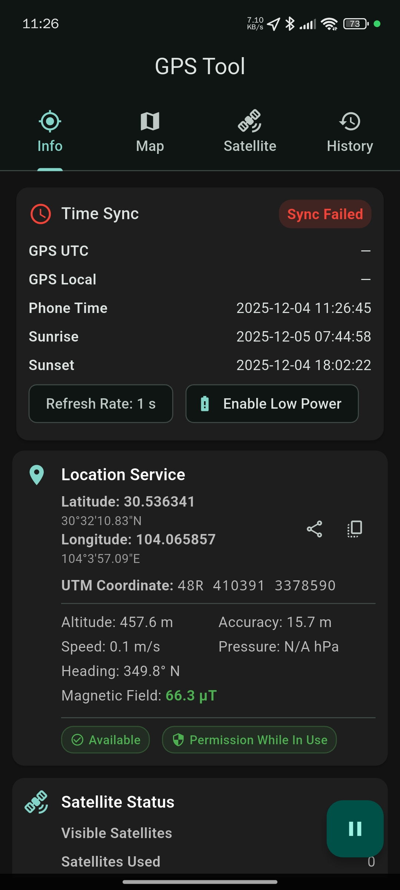
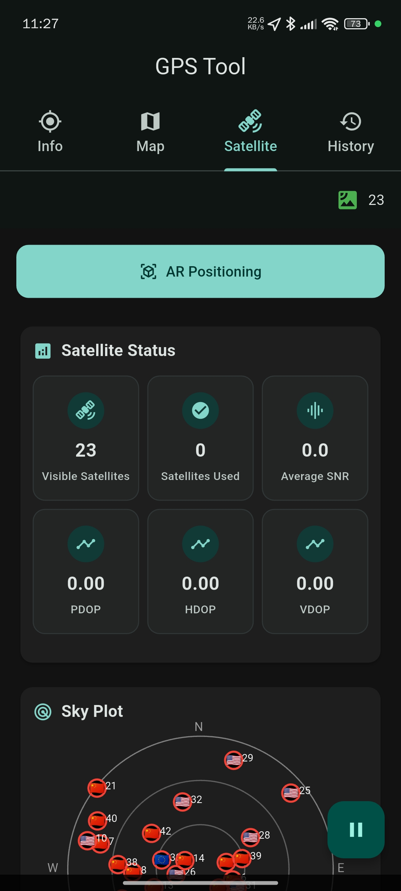
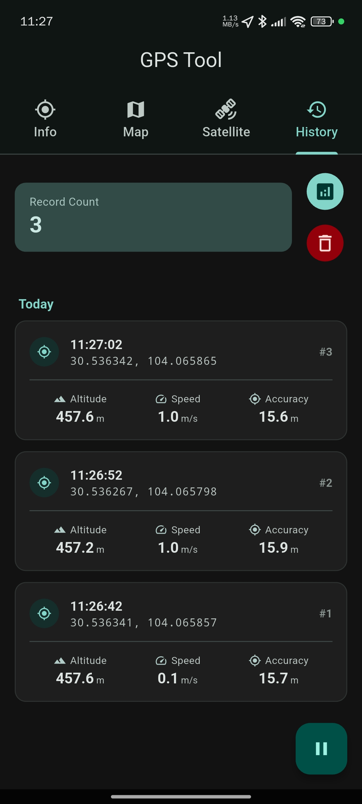

您的专业卫星信号分析伙伴
精准、高效、可靠。深入了解您周围的GNSS卫星世界。
实时数据显示
查看详细的卫星数据，包括PRN、信噪比（SNR）、方位角和高度角。
多星座支持
支持GPS、GLONASS、Galileo和北斗等多个全球导航卫星系统。
可视化分析
通过直观的图表和卫星天空图，清晰掌握卫星分布和信号质量。
应用截图



精准、高效、可靠。深入了解您周围的GNSS卫星世界。
查看详细的卫星数据，包括PRN、信噪比（SNR）、方位角和高度角。
支持GPS、GLONASS、Galileo和北斗等多个全球导航卫星系统。
通过直观的图表和卫星天空图，清晰掌握卫星分布和信号质量。